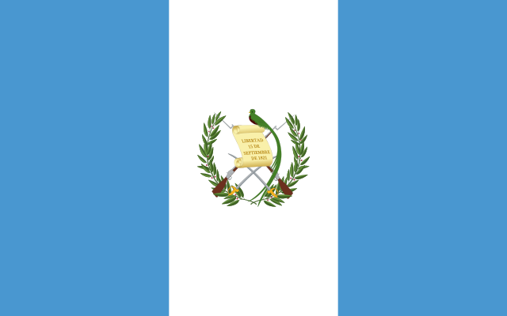
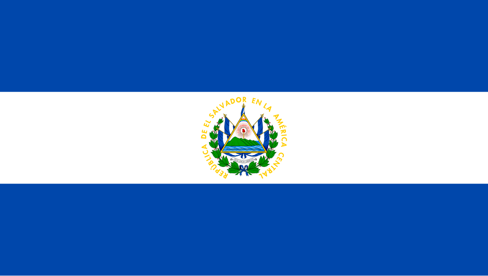
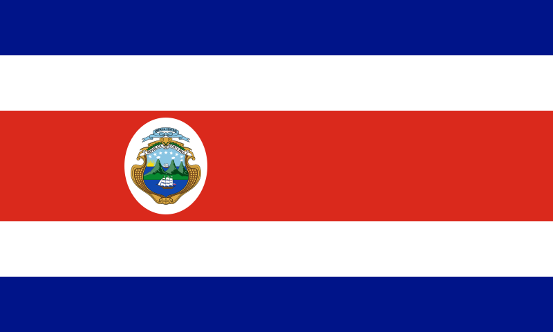
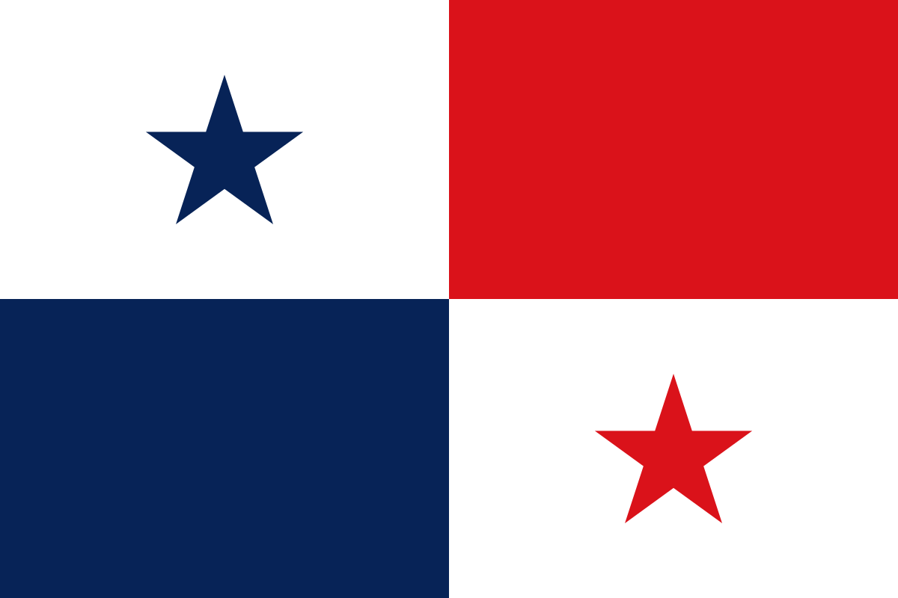
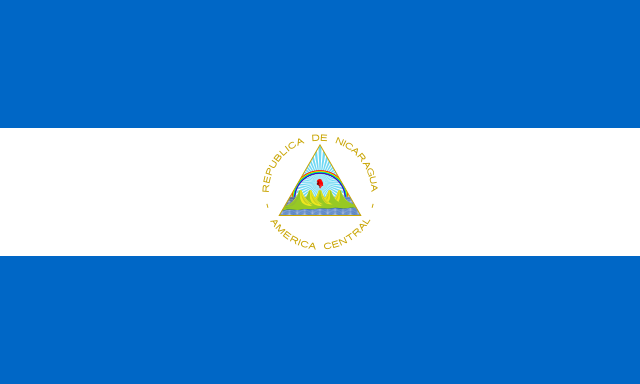
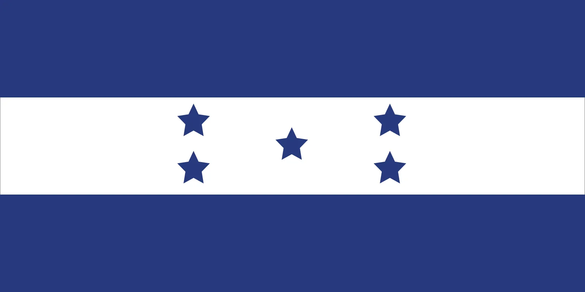
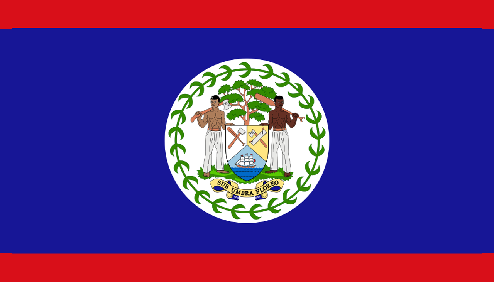

Guatemala

Guatemala, el corazón del mundo maya, es un país de
contrastes donde se mezcla la historia precolombina con la modernidad. Sus
impresionantes volcanes, lagos cristalinos y bosques nubosos ofrecen una
experiencia única a los visitantes. Antigua Guatemala, una ciudad colonial
con calles empedradas y edificios históricos, es uno de los destinos más
populares. Además, el Lago de Atitlán, rodeado por montañas y pueblos
indígenas, es considerado uno de los lagos más bellos del mundo.
Mas sobre Guatemala
El Salvador

El Salvador, el país más pequeño de Centroamérica, ofrece una
mezcla perfecta de montañas, playas y cultura. Aunque es pequeño en tamaño,
su variedad geográfica es impresionante. Desde las olas perfectas para
surfistas en playas como El Tunco, hasta las rutas de montaña como la Ruta de
las Flores, donde se pueden visitar pueblos pintorescos y disfrutar de la
gastronomía local. La capital, San Salvador, combina lo moderno con lo
tradicional, ofreciendo tanto rascacielos como mercados locales vibrantes.
Mas sobre El Salvador
Costa Rica

Costa Rica es conocida mundialmente por su enfoque en la
sostenibilidad y la protección del medio ambiente. Este país sin ejército
desde 1949, dedica gran parte de sus recursos a la conservación de la
naturaleza. Es el hogar de más del 5% de la biodiversidad mundial, con
parques nacionales que albergan una vasta variedad de flora y fauna. Los
turistas disfrutan de actividades como el senderismo en la selva tropical, el
avistamiento de aves, y la visita a las playas del Caribe y del Pacífico.
Mas sobre Costa Rica
Panama

Panamá es famoso por su canal, una de las obras de ingeniería
más importantes del mundo, que conecta los océanos Atlántico y Pacífico. Pero
más allá del canal, Panamá ofrece una mezcla fascinante de modernidad y
tradición. La Ciudad de Panamá, con su impresionante horizonte de
rascacielos, contrasta con el Casco Viejo, el distrito histórico con calles
adoquinadas y arquitectura colonial. Además, los turistas pueden explorar las
Islas de San Blas, habitadas por los indígenas Guna Yala, o disfrutar de las
montañas y selvas tropicales de la región de Boquete.
Mas sobre Panama
Nicaragua

Nicaragua es un país de América Central ubicado entre el océano Pacífico y el mar Caribe, conocido por
su espectacular territorio con lagos, volcanes y playas. El extenso lago Managua y el icónico estratovolcán Momotombo
se ubican al norte de la capital, Managua. Al sur está Granada, que se destaca por su arquitectura colonial española y
un archipiélago de islotes navegables con abundantes especies de aves tropicales.
Mas sobre Nicaragua
Honduras

Honduras es un país de América Central con costas en el mar Caribe al norte y en el océano Pacífico al sur. En el bosque tropical cerca de Guatemala,
el antiguo sitio ceremonial maya de Copán tiene jeroglíficos tallados en piedra y estelas, altos monumentos de piedra. En el mar Caribe, se encuentran
las Islas de la Bahía, un destino para el buceo que forma parte de la Barrera de Coral Mesoamericana.
Mas sobre Honduras
Belice

Belice es un país de la costa este de América Central, con riberas en el mar Caribe hacia el este y una selva densa al oeste. Frente a sus costas, la
enorme Barrera del Arrecife de Belice, con cientos de islas bajas llamadas cayos, es hogar de una abundante fauna marina. Las áreas selváticas
de Belice albergan ruinas mayas, como el Caracol, conocido por su pirámide elevada; Lamanai, junto a una laguna; y Altún Ha, muy cerca de la capital Ciudad de Belice.
Mas sobre Belice